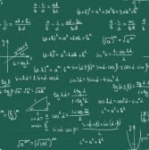

Тестування з теми "Правила ергогомічного розміщення відомостей на веб-сторінці"
Бажаємо успіхів!

Правила ергогомічного розміщення відомостей на веб-сторінці
Інструкція
- Виберіть один з варіантів в кожному з 4 питань;
- Натисніть на кнопку "Показати результат";
- Скрипт буде непереливки результат, доки Ви не відповісте на всі питання;
- Загляньте у вікно поруч з номером завдання. Якщо відповідь правильна, то там (+). Якщо Ви помилилися, там (-).
- За кожну правильну відповідь нараховується 1 бал;
- Оцінки: менше 2 балів - НЕЗАДОВІЛЬНО, від 2 але менш 3 - ЗАДОВІЛЬНО, 3 і менше 4 - ДОБРЕ, 4 - ВІДМІННО;
- Щоб скинути результат тестування, натиснути кнопку "Скинути відповіді";